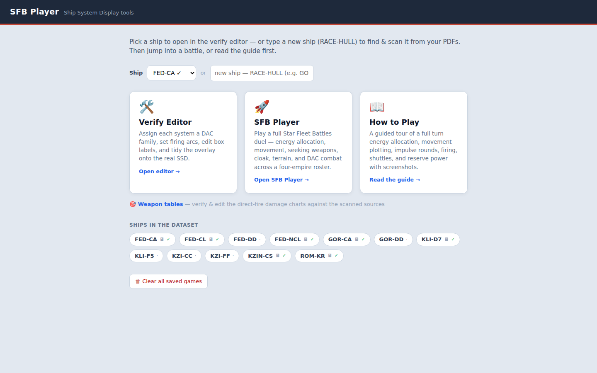
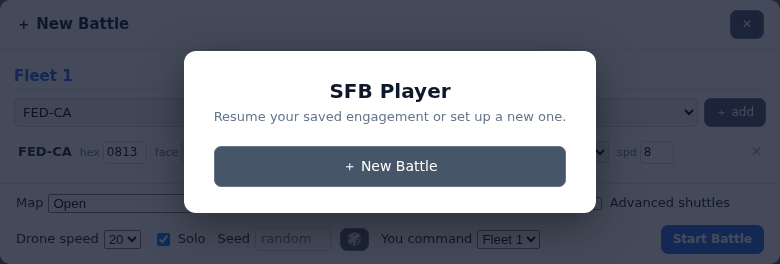
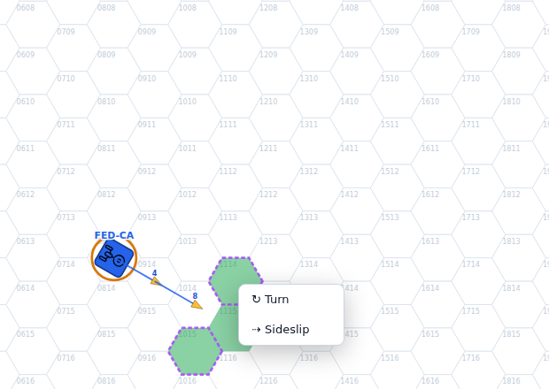
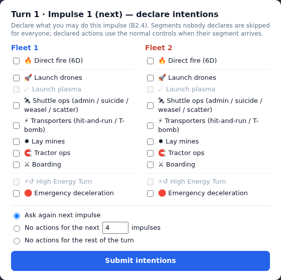
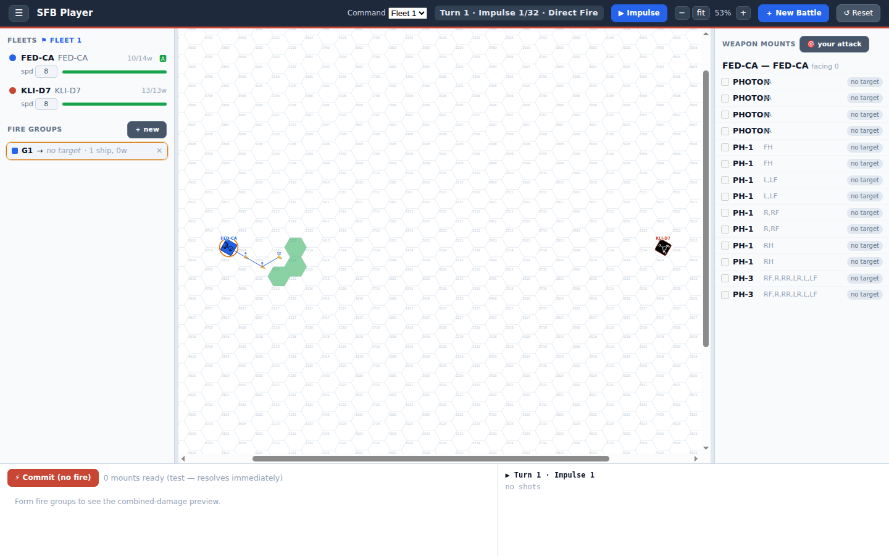
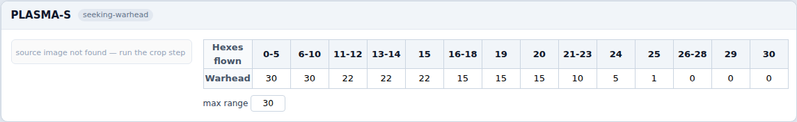

📖 How to Play
SFB Player runs a full Star Fleet Battles duel in the browser: energy allocation, plotted movement, 32-impulse turns, seeking weapons, shuttles, and the Damage Allocation Chart. Rule numbers like (B2.3) refer to the Captain's Master Rulebook. This page walks one complete turn from setup to record keeping.
1 · Setting up a battle

From the home page open SFB Player, then ＋ New Battle. Build each fleet from the verified-ship roster — add the same hull more than once and the ships are named FED-CA-1, FED-CA-2, …; otherwise they simply carry their type, like KLI-D7.

- Solo — one player commands both fleets, switching perspective from the header dropdown. Ideal for learning.
- Multiplayer — the battle issues a four-letter commander code per fleet. Share each code with its commander; they join from the start screen with it. Everything each commander shouldn't see — the enemy's energy form, movement plots, and declarations — is hidden by fog of war.
- Seed — fix it for a reproducible battle; leave blank for random dice.
2 · Energy allocation (B3.0)
Each turn opens on the Energy Allocation Form — the ship's own console art with live controls placed on it. Every point of produced power (warp + impulse + APR, plus charged batteries) is budgeted here.

- The meter can't go over. Any control that would exceed produced power + charged batteries is refused outright (H5/H7). Movement is additionally capped at your warp output + one impulse point (C2.11).
- Weapons arm over multiple turns (photons two, plasma three) and must be fed every turn or the charge is lost (E4.21, FP1.21). OL overloads, PX sets photon proximity fuses.
- Reserve warp is the warp power you bank into the batteries for reactive use during the turn — it can never exceed battery capacity (H7.41/H7.113). It funds mid-turn HETs, erratic maneuvers, reinforcement, and weapon tricks; whatever is left drains into the batteries at end of turn (H7.36).
- Shuttle Bay — one control set with WW (wild-weasel charges, 1 point each for two consecutive turns, any number at once (J3.12, J3.123)) and SUI (suicide-shuttle arming, 1–3 warp points per turn in half-point steps for three consecutive turns; warhead = 2 × banked energy (J2.2211)). Right-click the placed control in the EAF editor to pick its Default / Wide / Tall layout.
When the form balances, press 🔒 LOCK. It is final — in multiplayer the turn proceeds when every commander has locked.
3 · Plotting movement (C1.32)
Click one of your ships to make it the plot subject. Green hexes are legal next steps, red hexes need a turn your turn mode doesn't allow yet, and purple dashed outlines are legal sideslips.

- Click a green hex to extend the course one step. If the hex could be reached by a turn or a sideslip, a small chooser asks which. Drag along the map to route with straights and sideslips only — a drag never turns.
- Red hexes offer a ⚡ High Energy Turn from the chooser — a snap turn past your turn mode that costs 5 reserve warp at execution plus a breakdown roll (C6.2, C6.5). The option grays out in impulse play if the ship lacks the reserve warp.
- Click a hex already on the path to re-plan the route from that point (the path after it is discarded; in energy allocation any later speed changes go too). Right-click a path hex to schedule a mid-turn speed change (C12); right-click empty map to clear the plot.
- Plots cap at impulse 32 and execute automatically — plotting engages the autopilot (the 🅰 badge turns it off if you want manual control). Plots stay visible to their commander and editable through impulse play; speed changes lock at energy allocation.
4 · Declaring intentions (B2.4)
At the start of every impulse each commander declares — secretly and simultaneously — what they might do this impulse. Declarations are announced once everyone has submitted, and only declared segments pause for action; everything else advances automatically.

- Direct fire pauses the impulse at the fire step for your commit; activity items (launches, transporters, mines, tractors, boarding) pause the activity segment until you press ✅ Done.
- No actions for the next N impulses / rest of the turn fast-forwards: impulses run automatically with only scheduled activity (movement, seeking weapons, decel). If an enemy declares an action meanwhile, you're asked whether to resume manual play; a 😴 Wake button cancels the window any time.
- In multiplayer nothing advances without consensus — the impulse waits until every commander has declared, moved, and finished their declared segments. In solo one combined checklist covers both fleets.
5 · Impulse play (B2.3 §6)

Each of the 32 impulses runs the Sequence of Play: movement, seeking-weapon impact, the activity segment, direct fire, and post-combat. Ships move per the movement chart for their speed; each commander's client executes its own fleet's plots (the enemy's plots stay secret).
Fighting
- Direct fire — click your ship to start a fire group, click an enemy to target it, pick the weapon mounts, then Commit. Both sides commit before anything resolves; damage lands simultaneously through the DAC. Only weapons that are armed, in arc, off cooldown, and fed by the capacitor can be selected.
- Seeking weapons — launch drones, plasma, or shuttles from the target's context menu / the launch buttons during your declared activity segment. Plasma warheads age with distance flown (FP1.53); phasers can weaken an incoming plasma or shoot down drones (FP1.611).
- Shuttle ops — the Shuttle Bay control's 🚀 buttons launch a charged wild weasel (decoy) or an armed suicide shuttle (which targets like a drone). Right-click your own admin shuttle beside a carrier to recover it.
- Hit-and-run raids — right-click an enemy in transporter range (its facing shield must be down): commit one or more boarding parties; each rolls separately and needs its own transporter (D7.8).
Reserve power in the moment (H7)

- Open your ship's EA view (right-click → View EA). The header is the reserve counter: reserve warp, battery charge, and the combined pool.
- Systems reserve power may legally feed stay live: ECM/ECCM (applies at the fire step), the phaser capacitor, tractor power, shield reinforcement, erratic maneuvers, and the shuttle arming banks. Everything else is locked until the next energy allocation (H7.35).
- Every spend is confirmed in a dialog with a Reserve warp / Battery selector — warp-only uses (movement, HETs, suicide arming) show battery disabled (H5.4).
- When incoming damage is scored on your shield, you're prompted to pour reserve power into reinforcement before it lands (H7.134) — in multiplayer this reaches the defending commander even when the other side resolves the volley.
- 🛑 stop declares emergency deceleration: the ship halts two impulses later (C8.10).
6 · End of turn (B2.3 §7–8)
- After impulse 32: unfired non-holdable weapons discharge, drone racks reload, damage control and emergency repairs run, and leftover reserve warp drains into the batteries automatically (the log reports what was stored and what was lost) (H7.36).
- The next turn's Energy Allocation begins with your batteries recharged accordingly and weapon arming carried forward.
7 · The data tools
The battle engine runs entirely on verified data: the Verify Editor captures each ship's systems, arcs, and chart stats from your scanned SSDs, and the Weapon Tables validator holds every range/damage chart — the direct-fire weapons and the plasma torpedo aging tables.
